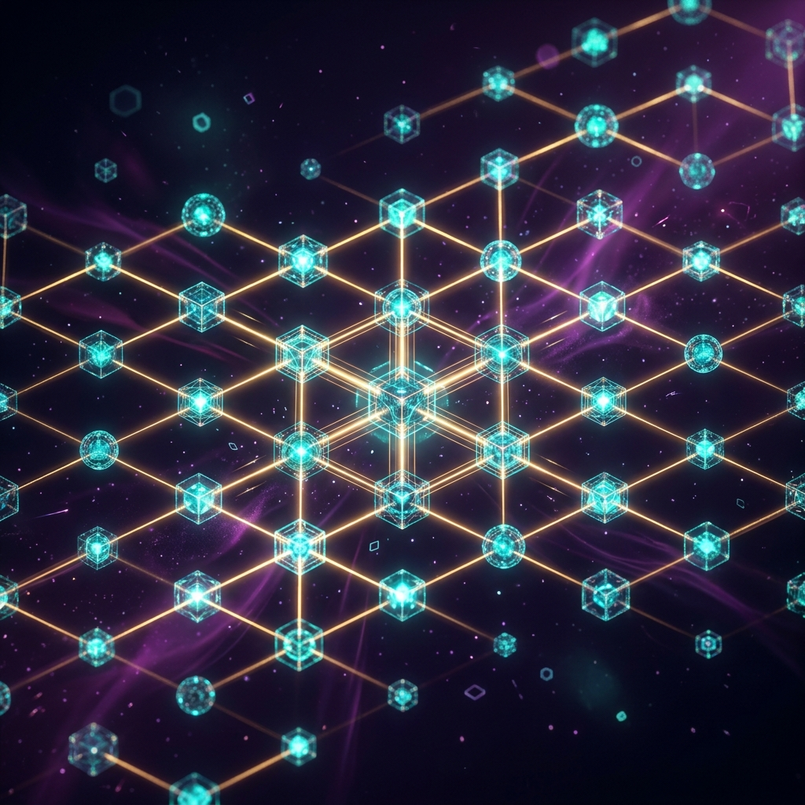

A free, open-source Rust/Wasm engine that turns every browser into a physics compute node. Neural Physics AI predicts physical interactions locally with 99.9% accuracy — eliminating the need for centralized servers.
As concurrent users grow, traditional authoritative servers bottleneck — creating rubber-banding, latency spikes, and runaway cloud costs.
Traditional multiplayer physics engines rely on centralized servers to calculate collisions, gravity, and fluid dynamics. These servers become the single point of failure and cost — bottlenecking at scale with rubber-banding and exorbitant compute bills.
A distributed physics engine where every connected client acts as a compute node, synchronized via lightweight state channels. Combined with "Neural Physics" — localized AI models that predict physical outcomes with 99.9% accuracy — reducing sync bandwidth by orders of magnitude.
Three distinct layers — each optimized for its role — compose the Aether-Net stack.
Custom-built, multi-threaded rigid-body and fluid dynamics solver. Compiles to Wasm for near-native browser performance. Rust's ownership model prevents memory leaks in long sessions.
Strictly-typed API wrapper for web developers. Out-of-the-box adapters for Three.js, Babylon.js, and PlayCanvas. Manages Wasm lifecycle and buffer array data transfer.
Optimized ML models (ONNX → Wasm) run locally. Predictive State Resolution fills visual gaps between sync ticks. AI-driven procedural destruction offloads stress calculations to NPU.
// Initialize the Aether-Net physics world in 4 lines
import { AetherWorld, RigidBody, NeuralPhysics } from '@aether-net/core';
const world = new AetherWorld({
gravity: [0, -9.81, 0],
neuralPhysics: true
});
const cube = world.createBody(
RigidBody.cuboid(1, 1, 1),
{ mass: 5.0 }
);
// Connect to the decentralized edge network
await world.connectP2P({ region: 'auto', maxPeers: 64 });
// Physics runs at 60fps — AI fills in between sync ticks
world.step(1/60);
Every feature is classified by priority and engineered to work at the edge.
| Feature | Description | Implementation | Priority |
|---|---|---|---|
| Edge-Compute Node Protocol | Devices share idle compute power to process physics for neighboring players in the spatial grid. | Rust-based P2P WebRTC data channels for low-latency UDP-like communication. | P0 |
| Neural Physics Solver | AI approximations of fluid dynamics and soft-body physics to bypass CPU-heavy math. | Rust integrating with Wasm-optimized ONNX runtime models. | P0 |
| TypeScript API Bindings | Developer-friendly API for instantiating worlds, bodies, and forces. | Auto-generated TS types derived from Rust source code. | P0 |
| AI Anti-Cheat Authority | Decentralized consensus detecting anomalous physics (e.g., speed hacks). | Federated learning model checking local states against statistical norms. | P1 |
| Zero-Latency Rollback | GGPO-style rollback netcode optimized for continuous 3D spatial environments. | Rust memory snapshotting and deterministic state recreation. | P1 |
| Dynamic Load Balancing | AI shifts physics boundaries — lagging devices offload to neighbors. | Graph neural networks assessing network health and device capability. | P2 |
Aether-Net is designed to win the confidence of every stakeholder in the ecosystem.
Build a 1,000-player battle royale without provisioning a single AWS EC2 instance for physics. The TypeScript API means your existing web team ships without learning Rust.
Objects react instantaneously to inputs because AI predicts the outcome locally before the network confirms it. The decentralized nature is invisible — only seamless experience remains.
Host dedicated "Super-Nodes" for enterprise clients with SLAs. Rather than losing hosting revenue, providers gain a premium tier for guaranteed stability in massive deployments.
Rust's ownership model eliminates buffer overflows and RCE vulnerabilities endemic to C++ engines. Critical when running unverified, decentralized code on user devices.
An 18-month journey from core engine to AI-powered decentralized physics network.
Develop the core Rust rigid-body physics engine. Establish the WebAssembly compilation pipeline. Release initial TypeScript bindings and Three.js integration.
Implement P2P WebRTC data channels in Rust. Develop deterministic lockstep and state synchronization protocols.
Train neural network models on offline deterministic physics data. Deploy localized AI Predictive State Resolution via ONNX. Implement federated AI anti-cheat mechanisms.
Ubiquitous adoption through a free core, followed by strategic ecosystem monetization.
MIT/Apache 2.0 licensed engine and TS bindings. Viral tech demos, hackathon sponsorships. Become the default WebGL/WebGPU physics engine.
Aether-Net Pro: high-performance "Super-Nodes" with guaranteed uptime. Commercial licensing for hyper-advanced AI models (water, cloth, destruction).
Micro-transaction layer where users donate idle compute for compensation. Game developers pay for distributed processing. Aether-Net earns a fractional fee per transaction.
GitHub forks, NPM downloads, and live projects utilizing Aether-Net.
Reduction in KB/s required for client synchronization vs. traditional servers.
% of physics processing handled by edge nodes vs. centralized fallback.
Neural Physics success rate predicting next state without server correction.
Aether-Net is more than a physics engine. It's the infrastructure for the true, decentralized Metaverse.